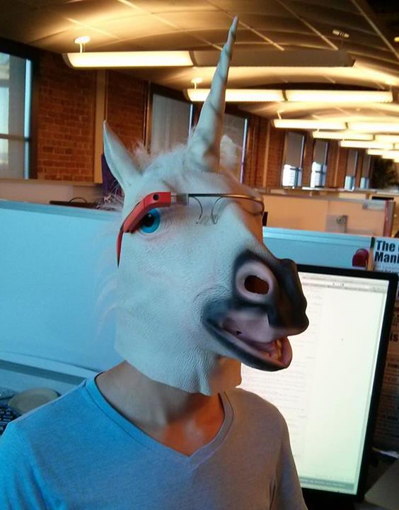
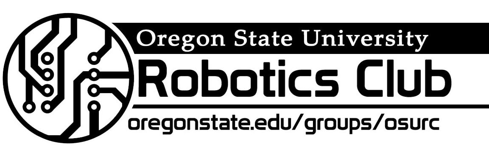
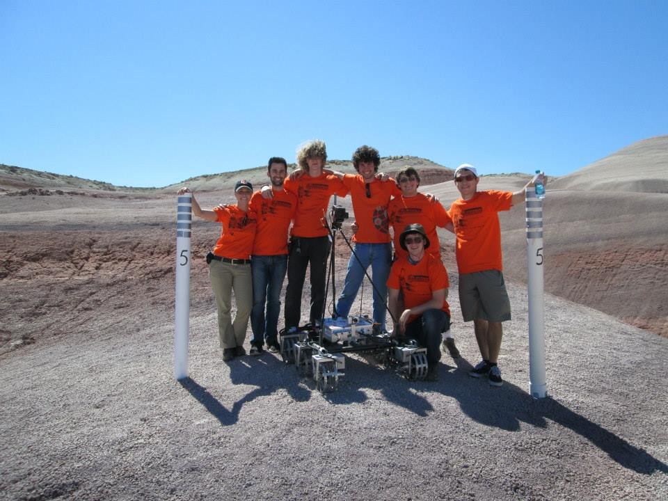
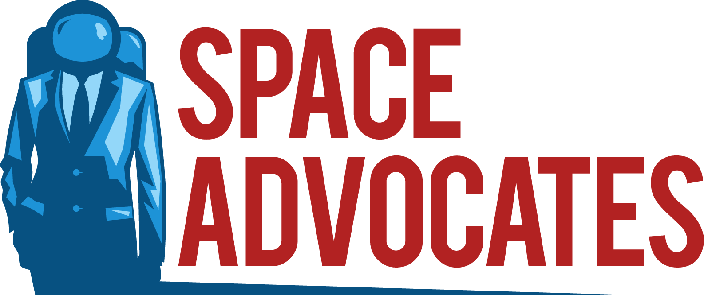
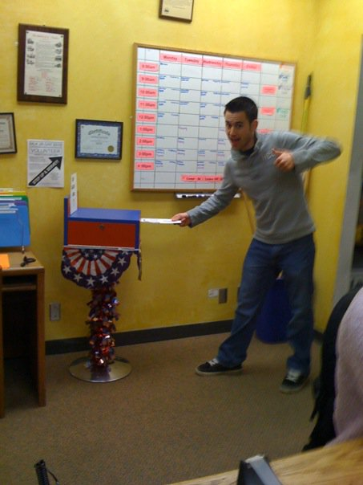
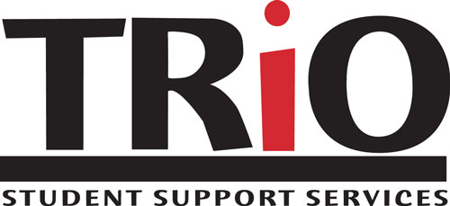
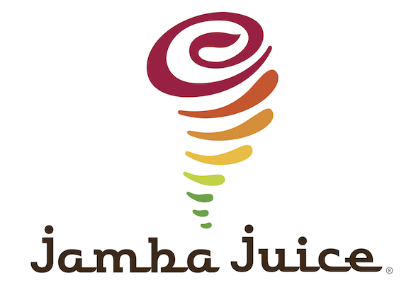

Mozilla
Release Engineering Intern
June 2013 to September 2013
Primarily developed and maintained a REST API built on Pylons using Python, Mako, HTML, JavaScript and CSS. Designed and implemented various extensions such as returning a JSON response detailing build/test progress status, as well as displaying and reporting progress status. Contributed to several other areas, including design and implementation of Nagios scripts and Flot data visualizations, and diagnosing/finding solutions to various bugs.
In the 12th week of my internship, I had the opportunity to give a presentation about everything I had done so far, and it's online for all to see! Check it out right below the picture on the left!
SpaceX


Avionics Intern, Hardware Development Test
June 2012 to September 2012
Developed on an off-the-shelf embedded development platform to create a platform framework that integrated in-house boards and allowed for interfacing with existing hardware to accomplish custom testing procedures. Designed and implemented an onboard Django-based server for controlling and reviewing tests in real-time. The majority of this work was done in Python, with smaller portions being completed in HTML and JavaScript.
OSU Mars Rover Team
 
Team Lead and Software Lead
June 2011 to June 2013
Built a 6-wheeled mobile robotic platform with robotic arm for competing in the University Rover Challenge (URC). As Team Lead, managed weekly meetings, coordinated project leads (i.e. Mechanical, Electrical, Software, Science), organized tasks, deadlines and goals, mailing lists, secure sponsorship, coordinated public events and recruitment activities. Channel between Rover Team members, OSU, the Mars Society and OSU Robotics Club Executives. As Software Lead, managed software design process, deadlines, goals, and delegated tasks. Oversaw the proper implementation and maintenance of software and repositories. Established/used design review process for all projects.
Space Advocates / Penny4NASA


Founder and Exective Director
March 2012 to Present
Founded non-profit corporation advocating for space exploration, increased funding for NASA and other space related research. Manage team of 20 permanent volunteers. Operates largely online using a website, social media presence, government relations, and media relations, as well as taking monetary donations. To date the organization has risen upwards of $10,000 in non-tax-deductible donations, which has enabled the improvement of every aspect of the organization.
Other

Human Services Resource Center
Finance Coordinator
June 2011 to June 2012
Managed budget of approximately $330,000 with responsibilities such as spending approval, depositing of donations, record keeping and account balancing/planning. I also built and managed the center's website which was developed in Drupal on the University's domain.

Associated Students of Portland Community College (ASPCC)
Student Sentator
October 2009 to June 2010
Advocated for student well-being on the federal, state and local level. Educated students about their education, rights and how they can effect change through voting. Ran voter registration drives where we registered students to vote, gaining 1,800+ over the course of a month or two.

TRIO Program - Portland Community College
Peer Mentor
September 2009 to June 2010
Hollywood Video
Shift Manager
July 2009 to February 2010
